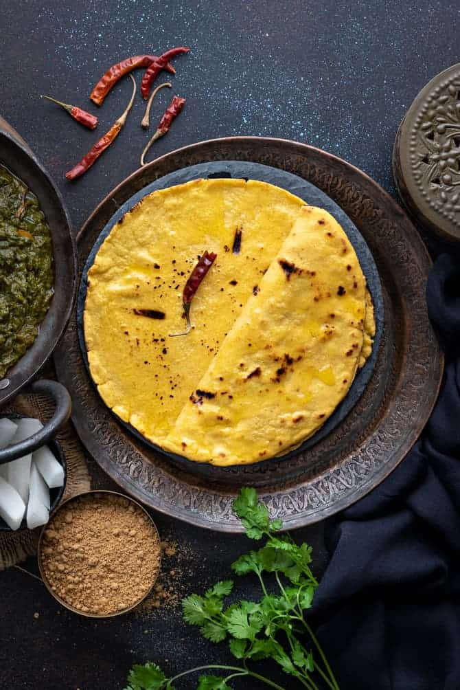

Roti is a flat, unleavened whole wheat bread, visually similar to a pancake, cooked on a traditional iron griddle called tawa, a key element of the rural cuisine of Punjabi. It is one of the most basic breads in India, a cross between pita bread and a tortilla that is buttered on one side. Makki di roti is made from makai atta cornmeal flour, salt, and water, and once it's done, it is brushed with ghee and traditionally served piping hot with sarson da saag (cooked mustard leaves and spices), especially during the winter months.
Meal prep time : 20 minutes
Servings : 2